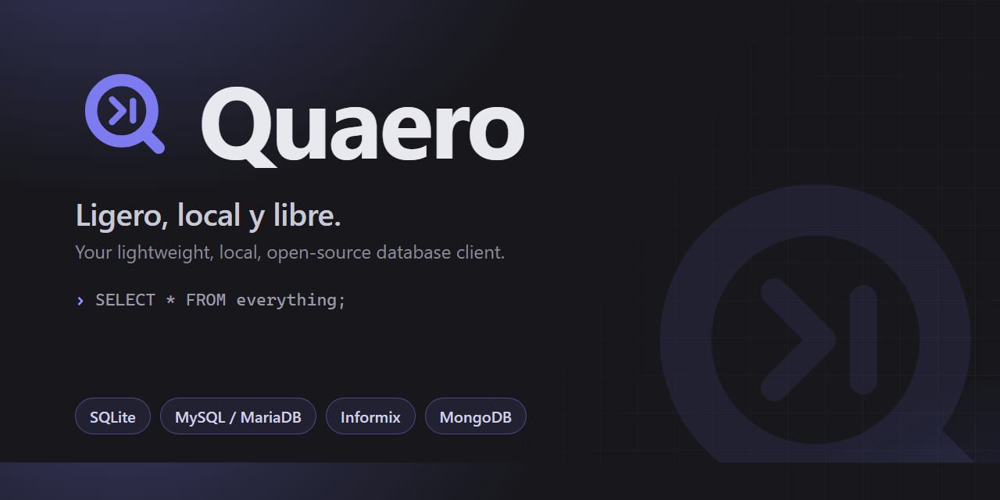

Gestor de bases de datos
Tu gestor de bases de datos: ligero, local y libre.
Nativo y sin rodeos, sin el peso de Electron ni una JVM. Todo se queda en tu equipo —sin nube, sin cuentas, sin telemetría— con edición transaccional segura para SQLite, MySQL/MariaDB, Informix y MongoDB.
Gratis y de código abierto · Windows (macOS y Linux próximamente)

Ligero y nativo
Núcleo en C y WebView del sistema: arranca al instante, sin el peso de un entorno Electron o una JVM.
Multi-motor
SQLite, MySQL/MariaDB, Informix y MongoDB desde una misma interfaz, con soporte de Informix incluido.
Local y privado
Tus conexiones y consultas se quedan en tu equipo. Sin cuentas, sin nube, sin telemetría.
Edición segura
Cambios sobre los datos en una transacción con vista previa del SQL: confirmas o descartas.
Código abierto
Gratuito y auditable. Sin licencias por asiento ni funciones tras un muro de pago.
Todo lo que esperas de un gestor de bases
Cada característica descrita aquí es algo que Quaero hace hoy. Las capturas de cada módulo se irán añadiendo desde el kit de medios.
Editor SQL
Autocompletado por esquema, formateo, historial de consultas y snippets reutilizables.
Rejilla editable
Edita, inserta y borra filas en una transacción con vista previa; detalle de fila para registros anchos.
Explorador por tipo
Árbol de conexión → base → tablas, vistas, funciones, procedimientos, triggers y eventos, con iconos a color.
Import / Export
CSV, JSON, XLSX, XML, HTML y SQL. Importa hojas de cálculo y exporta cualquier resultado.
Herramientas
Diagrama ER, constructor visual de consultas, gráficos, monitor de servidor, usuarios y permisos.
Multi-motor
SQLite, MySQL/MariaDB, Informix y MongoDB — mismo flujo de trabajo en todos.
Comparativa honesta
Frente a herramientas conocidas. Solo afirmaciones verificables; señalamos también dónde la competencia es más fuerte.
Borrador pendiente de revisión y aprobación del propietario antes de publicar (issue #201). Verificar cada celda.
| Quaero | Navicat | DBeaver CE | HeidiSQL | TablePlus | phpMyAdmin | Server Studio* | |
|---|---|---|---|---|---|---|---|
| Precio | Gratis | De pago | Gratis | Gratis | Freemium | Gratis | Freemium |
| Código abierto | Sí | No | Sí | Sí | No | Sí | No |
| Plataforma | Windows* | Win/mac/Linux | Win/mac/Linux | Windows | Win/mac/Linux | Web | Win/mac/Linux |
| Ligero (sin Electron/JVM) | Sí | Sí | No (JVM) | Sí | Sí | Web | No (JVM) |
| Local, sin telemetría | Sí | ~ | ~ | Sí | ~ | Sí | ~ |
| Soporta Informix | Sí | No | Sí | No | No | No | Sí |
| Editor SQL con autocompletado | Sí | Sí | Sí | Sí | Sí | Sí | Sí |
| Edición transaccional (vista previa) | Sí | ~ | ~ | ~ | ~ | ~ | ~ |
| Diagrama ER | Sí | Sí | Sí | ~ | Sí | ~ | ~ |
| Constructor visual de consultas | Sí | Sí | Sí | No | ~ | No | ~ |
| Gráficos | Sí | Sí | ~ | No | No | ~ | ~ |
| Monitor de servidor | Sí | Sí | ~ | ~ | No | ~ | Sí |
| Usuarios y permisos | Sí | Sí | ~ | ~ | No | Sí | Sí |
| Import/Export (CSV/JSON/XLSX/XML/HTML/SQL) | Sí | Sí | Sí | ~ | Sí | ~ | ~ |
| Generación de datos | Sí | Sí | ~ | No | No | No | ~ |
Windows por ahora; macOS y Linux en camino. Server Studio = edición gratuita JE (Java Edition) de la suite para Informix. Revisado: 9 jul 2026. «~» = parcial o según edición/plugin. Comparativa preliminar — verificar cada celda.
Descargar
Instalador para Windows con los cuatro motores incluidos (SQLite, MySQL/MariaDB, Informix, MongoDB).